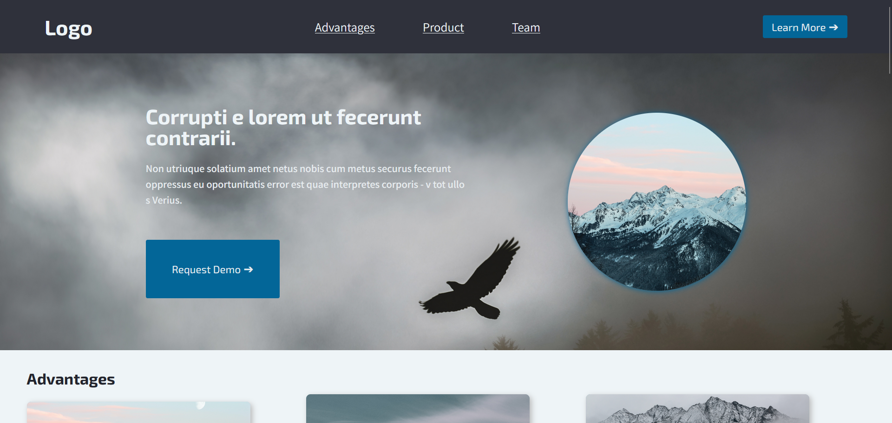

Mockups

Visual Details

Working Solution
To see the working solutions, you can follow the following link
Visit siteMotivation
For this project, the goal was to combine the new knowledge about colour and fonts, on a combined responsive webpage.
I choose to take the fonts from earliers assigments, as well as colours with a small change in the accent colours. I choose to do this as I was quite happy with the font choices, and wanted to focus on the merging ideas.
For the layout I wanted to also incorporate the grid and flex tips we were given, trying to mainly use grid for layout of bigger sections, and using flex for styling on individual pieces.